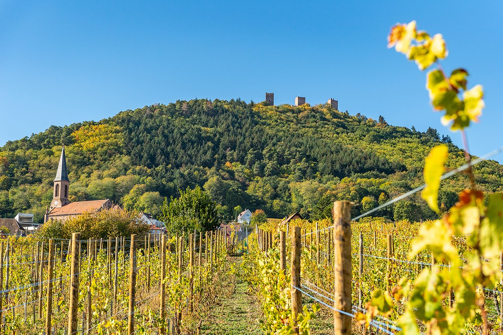

帝堡香槟
乐特酒庄
Zinck星尼克酒庄位于阿尔萨斯最美丽的村庄之一Eguisheim。山脉掩映，气候属于半欧陆式，阳光充足，温带干燥。葡萄品种，包括白皮诺，灰皮诺，雷司令和琼瑶浆。葡萄园占地超过20公顷，生产的葡萄酒级别AOC，气泡，特级田，晚收甜酒和广受爱戴的贵腐酒。第一代庄主Paul Zinck于1964年创建了酒厂。他从2.5公顷的葡萄园开始。至70年代中期，酒庄占地6公顷。在与父亲一样的热情驱使下，现任庄主菲利普于1997年加入酒庄，接管了8公顷的土地。他对葡萄藤和大地的热情，加上他的创业技巧，使酒庄得到了认可，产生了具有阿尔萨斯乡村特有风格的葡萄酒如今占地20公顷，出口到二十多个国家。
